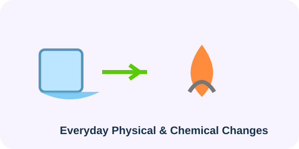

LESSON 8 OF 8LEARN
8
🏠 Matter Around Us • Learn
🏠 Daily-life connection
When ice melts, solid water changes into liquid water but remains H₂O. This is a physical change.
When a substance burns and new substances are formed, a chemical change has occurred.
